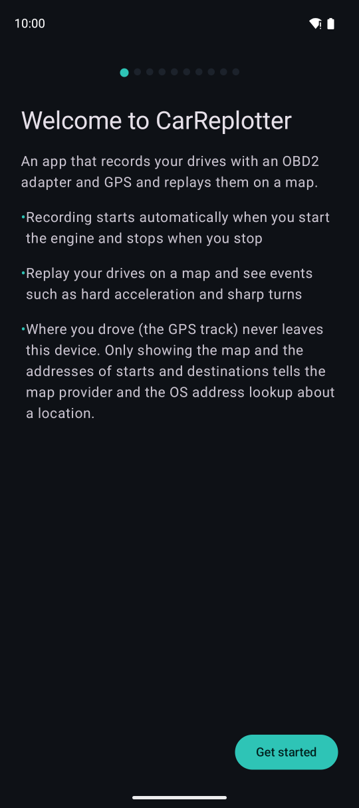
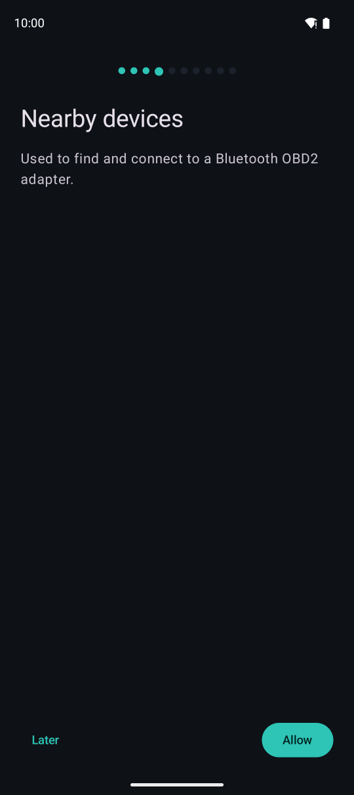
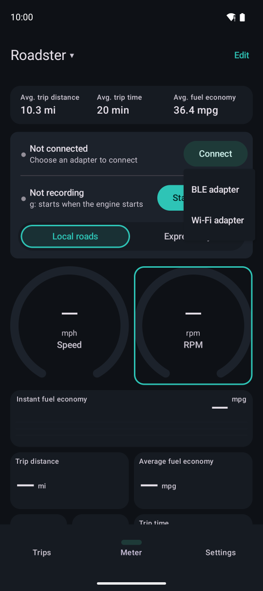

Getting started
Plug an OBD2 adapter into your car and connect to it once from the app. After that, every drive is recorded automatically.
What you need
- An Android 16 or later phone or tablet
- An ELM327-compatible OBD2 adapter. A Bluetooth Low Energy (BLE) adapter is recommended: it connects and starts recording automatically when you get in the car
- Wi-Fi adapters also work (you connect manually)
- Adapters that only support Bluetooth Classic (no BLE) cannot be used
- Without an adapter, you can still record trips with GPS only (no RPM, fuel economy and so on)
First setup
The first time you open the app, it asks for your language and units, then for the location and nearby devices (Bluetooth) permissions. You can choose “Later” and grant them afterwards.

About the app. Where you drove never leaves your device.

The nearby devices permission, used to find and connect to a BLE adapter.
Connecting to the adapter
Plug the adapter into the car's OBD2 port (usually under the dashboard on the driver's side), start the engine, then connect.

123- 1Tap “Connect” on the meter
- 2For a BLE adapter, choose “BLE adapter” and pick a nearby adapter
- 3For a Wi-Fi adapter, choose “Wi-Fi adapter” and enter its address (often 192.168.0.10:35000). Join the adapter's Wi-Fi network first
The app remembers BLE adapters you have used and connects automatically when the adapter appears nearby (when you start the engine). It identifies the vehicle from its VIN (if the car reports it) and the adapter.